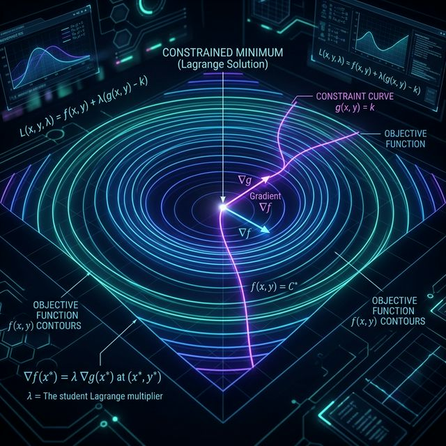
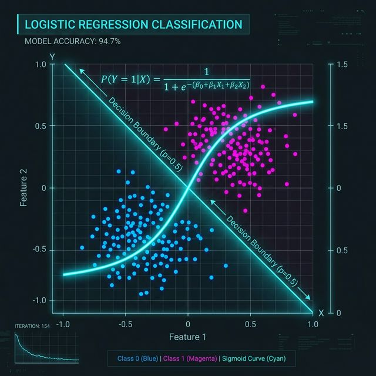

SHAHID||Portfolio
SHAHID||Portfolio
SHAHID||Portfolio
SHAHID||Portfolio
Optimization from first principles — gradients, learning rates, convergence, and modern optimizers.
From geometry to least squares — understanding constrained optimization mathematically.

The fundamental trade-off between model simplicity and prediction accuracy.

Classification through probability, sigmoid functions, and decision boundaries.
